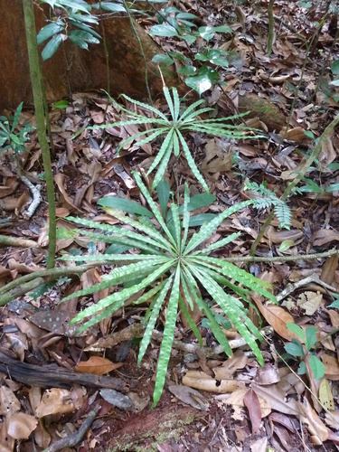

Dioncophyllaceae
Dioncophyllum Family
Dioncophyllaceae is a small family of flowering plants, comprising three monotypic genera of lianas or shrubs endemic to the tropical rainforests of West Africa. The family is remarkable for possessing species with unique leaf adaptations, including paired grappling hooks for climbing and, in Triphyophyllum peltatum, a carnivorous phase with glandular leaves for trapping insects. It belongs to the order Caryophyllales, closely related to other carnivorous families like Droseraceae and Nepenthaceae.
Overview
The Dioncophyllaceae family consists of only three species, each in its own genus: Dioncophyllum thollonii, Habropetalum dawei, and Triphyophyllum peltatum. These rare plants are restricted to the rainforests of West Africa (e.g., Sierra Leone, Liberia, Ivory Coast, Congo Basin).
They are perhaps most famous for the genus Triphyophyllum, which exhibits a unique life cycle involving three types of leaves: simple seedling leaves, mature leaves bearing paired grappling hooks near the apex for climbing, and, during a specific developmental or nutrient-stressed phase, long glandular leaves capable of trapping and digesting insects, making it one of the few known protocarnivorous or carnivorous plants that switch strategies. The other genera also possess hooked leaves (Dioncophyllum) or are non-hooked shrubs (Habropetalum). Phylogenetically, Dioncophyllaceae is part of the carnivorous clade within the diverse order Caryophyllales.
Their rarity, unique adaptations, and phylogenetic position make them of significant interest to botanists studying evolution, carnivory, and tropical biodiversity.
Quick Facts
- Scientific Name: Dioncophyllaceae Airy Shaw
- Common Name: Dioncophyllum Family
- Number of Genera: 3 (each monotypic)
- Number of Species: 3
- Distribution: West Africa (tropical rainforests).
- Evolutionary Group: Angiosperms - Eudicots - Core Eudicots - Caryophyllales
- Habit: Lianas or shrubs; one species carnivorous.
Key Characteristics
Growth Form and Habit
Plants are typically woody lianas (climbers) using specialized hooks on their leaves (Dioncophyllum, Triphyophyllum), or sometimes shrubs (Habropetalum).
Leaves
Leaves are arranged alternately along the stem. They are simple with entire margins and pinnate venation. Stipules are absent. A remarkable feature is heterophylly (different leaf types):
- Normal vegetative leaves: Simple, lanceolate or obovate.
- Hooked leaves: In mature climbing stages of Dioncophyllum and Triphyophyllum, the leaf midrib extends beyond the blade apex and bifurcates into a pair of strong, sharp, recurved grappling hooks used for climbing.
- Glandular (carnivorous) leaves: In Triphyophyllum peltatum, under certain conditions (often juvenile or nutrient stress), the plant produces long, linear leaves covered with stalked glands that secrete sticky mucilage to trap small insects, and sessile glands that secrete digestive enzymes.
Inflorescence
Flowers are borne in terminal or axillary, often large and many-flowered, branched clusters (cymes or panicles).
Flowers
Flowers are usually bisexual, radially symmetrical (actinomorphic), and typically 5-merous.
- Calyx: Consists of 5 sepals, which are free or fused only at the base, and are persistent in fruit.
- Corolla: Consists of 5 free petals, often white or yellowish, sometimes twisted (contorted) in bud.
- Androecium: Stamens number 10-30, often 10 arranged in two whorls of five. Filaments are free or slightly fused at the base. Anthers have two pollen sacs and open via longitudinal slits.
- Gynoecium: Features a superior ovary (usually; sometimes described as half-inferior), composed of 2-5 (usually 5) fused carpels forming a single chamber (unilocular) at least towards the apex. Placentation is free-central or basal. Ovules are numerous. Styles are free or fused at the base, as many as the carpels, with simple or capitate stigmas.
Fruits and Seeds
The fruit is typically a loculicidal capsule, opening by valves corresponding to the number of carpels. It contains numerous seeds. Seeds are often flattened, sometimes winged or disc-shaped, facilitating wind dispersal. Endosperm is present.
Chemical Characteristics
Plants contain characteristic naphthoquinones (e.g., plumbagin) and various alkaloids. Carnivorous species (Triphyophyllum) produce digestive enzymes (proteases, phosphatases).
Field Identification
Identifying Dioncophyllaceae in their West African rainforest habitat relies heavily on their unique leaf adaptations:
Primary Identification Features
- Liana or shrub habit in West African rainforests: Restricted geographic range and habit.
- Alternate, simple leaves: Basic leaf structure.
- Paired grappling hooks near leaf apex: Highly distinctive feature of mature Dioncophyllum and Triphyophyllum leaves, used for climbing.
- Long, linear leaves with sticky glands: Diagnostic for the carnivorous phase of Triphyophyllum peltatum.
- 5-parted flowers (if present): White or yellowish flowers with 5 sepals, 5 petals, 10+ stamens, superior ovary.
- Capsule fruit: Dry fruit opening by valves.
Secondary Identification Features
- Lack of stipules.
- Often large, many-flowered inflorescences.
Seasonal Identification Tips
Leaf features are often present year-round, but carnivory is stage-specific:
- Year-round: Liana/shrub habit and presence of hooked leaves (on mature plants) are key identifiers.
- Specific Stages/Conditions: The glandular carnivorous leaves of Triphyophyllum are only present during certain phases.
- Flowering/Fruiting Season (Varies): Flowers and capsules provide confirmation but may be high up in the canopy for lianas.
Common Confusion Points
Distinguishing Dioncophyllaceae from other climbers or plants:
- Ancistrocladaceae: Another family of lianas in Caryophyllales, also found in Africa/Asia, possessing single (not paired) hooks on leaves or modified branches. Flower and fruit structure also differ.
- Other Lianas: Many tropical lianas exist. Look specifically for the paired apical grappling hooks on simple leaves, which is unique to Dioncophyllaceae.
- Carnivorous Plants: While Triphyophyllum is carnivorous, its mechanism (sticky linear leaves) and overall morphology differ significantly from pitcher plants (Nepenthaceae, Sarraceniaceae) or sundews (Droseraceae), though they are related within Caryophyllales.
- Focus on the combination: West African Liana/Shrub + Alternate Simple Leaves + Paired Apical Hooks OR Glandular Linear Leaves = Dioncophyllaceae.
Field Guide Quick Reference
Look For:
- Liana or shrub (West Africa)
- Leaves: Alternate, Simple, Entire
- Paired apical grappling hooks (on mature leaves of 2 genera)
- Long linear glandular leaves (carnivorous phase of Triphyophyllum)
- Flowers: 5-parted, white/yellow
- Stamens: 10-30
- Ovary: Superior, unilocular
- Fruit: Capsule
Key Variations:
- Presence/absence of hooks
- Presence/absence of carnivorous leaves
- Habit (liana vs. shrub)
Notable Examples
The family consists of only three species, each in its own genus:

Triphyophyllum peltatum
(No common name)
The most famous species due to its carnivorous habit. A liana exhibiting three leaf types: simple juvenile leaves, mature leaves with paired apical hooks, and long, linear leaves covered in stalked sticky glands and sessile digestive glands produced during certain phases.

Dioncophyllum thollonii
(No common name)
A liana from the Congo Basin region, characterized by its mature leaves bearing the distinctive paired grappling hooks near the apex, similar to Triphyophyllum, but it does not produce carnivorous leaves.

Habropetalum dawei
(No common name)
A shrub found in Sierra Leone. Unlike the other two genera, it lacks hooked leaves and the climbing habit. Represents the non-liana form within the family.
Phylogeny and Classification
Dioncophyllaceae is classified within the order Caryophyllales, a large and diverse order of core eudicots. Its placement within this order is strongly supported by molecular data, specifically within a clade known as the "carnivorous Caryophyllales".
This clade includes several other families famous for carnivory or related adaptations: Droseraceae (sundews), Nepenthaceae (Old World pitcher plants), Drosophyllaceae (dewy pine), and Ancistrocladaceae (lianas with single hooks, sister to Dioncophyllaceae). This grouping suggests a shared ancestry and predisposition towards evolving carnivory or specialized glandular structures within this part of the Caryophyllales tree. Dioncophyllaceae, with its unique combination of hooks and facultative carnivory, provides key insights into the evolutionary pathways leading to these complex adaptations.
Position in Plant Phylogeny
- Kingdom: Plantae
- Clade: Angiosperms (Flowering plants)
- Clade: Eudicots
- Clade: Core Eudicots
- Order: Caryophyllales
- Family: Dioncophyllaceae
Evolutionary Significance
Dioncophyllaceae is highly significant for understanding plant evolution:
- Evolution of Carnivory: Triphyophyllum provides a unique example of facultative carnivory and heterophylly, offering clues about the intermediate steps and selective pressures leading to fully carnivorous plants within the Caryophyllales.
- Specialized Morphology: The evolution of paired grappling hooks represents a unique adaptation for climbing within angiosperms, convergent with but distinct from tendrils or single hooks.
- Phylogenetic Link: Its position connecting Ancistrocladaceae and the core carnivorous families (Droseraceae, Nepenthaceae, Drosophyllaceae) helps reconstruct the evolutionary history of these specialized lineages.
- Biogeography and Rarity: Its restricted West African distribution and small number of species make it important for understanding regional biodiversity and conservation priorities.